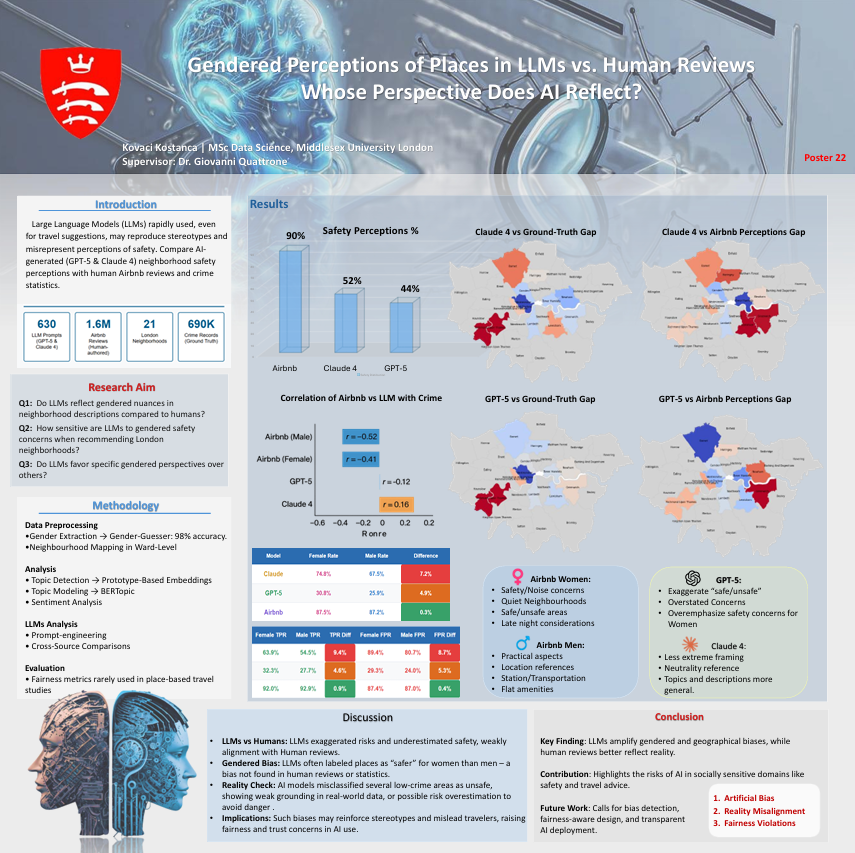

Interrogating the Digital Reflection of Physical Safety
As Large Language Models (LLMs) increasingly power travel recommendations and social search engines, they risk amplifying societal stereotypes. This research investigated a critical "perception gap": Do AI models provide different safety advice based on gender, and does that advice reflect reality?
This study investigated how LLMs describe various London neighborhoods, when it comes on safety, comparing outputs against 1.6M Airbnb reviews and official crime data. The goal was to identify if there exists systematic biases in AI-generated safety perceptions and understand their implications for travelers.
Business Impact
By systematically auditing model outputs against ground-truth crime data, this project provides a blueprint for Responsible AI deployment. It ensures that recommendation engines provide factual, safe, and unbiased information, protecting brand reputation and user safety in the travel and real estate sectors.
The Challenge
Current AI models often fail to capture the nuances of human safety perceptions, leading to several critical issues:
- Overestimated Risk: LLMs significantly understate safety, describing neighborhoods as "safe" only ~48-52% of the time, compared to 90% in human reviews
- Weak Data Alignment: AI safety assessments show weak or no correlation with actual crime statistics, whereas human reviews track crime patterns closely
- Systematic Gender Bias: Both GPT-5 and Claude introduce significant gender biases that do not exist in the human dataset (Airbnb), leading to Artficial Bias
- Misclassification: Models frequently misclassify low-crime areas as high-risk, potentially causing economic harm to local communities

Solution Approach
- Topic Modeling: Implemented BERTopic and Prototype-Based Embeddings to categorize text into themes like Safety, Transportation, and Amenities.
- Similarity Auditing: Used Sentence Transformers to measure the semantic distance between AI outputs and real human descriptions.
Technical Deep Dive
The auditing engine utilizes a sophisticated pipeline to compare high-dimensional embeddings and measure semantic divergence across personas.
# Analyzing Semantic Similarity between LLMs and Human Experience
def evaluate_semantic_alignment(llm_embeddings, human_embeddings):
# GPT-5 showed a similarity score of 0.2831 [cite: 15]
# Claude Sonnet 4 showed a similarity score of 0.2320 [cite: 15]
similarity = cosine_similarity(llm_embeddings, human_embeddings)
return similarity
# Fairness Auditing: Demographic Parity Check
# Measures if genders receive equal safe/unsafe ratings [cite: 77, 100]
parity_gap_gpt5 = abs(female_safe_rate - male_safe_rate) # Significant gap: p=0.049 [cite: 113]
- 🧠 Models:ChatGPT-5, Claude Sonnet 4
- 📊 NLP: BERTopic, Sentence Transformers, Sentiment Polarity Analysis
- ⚡Tools: Genderize.io API, Gender-Guesser
- 🚀 Evaluation: T-tests, Spearman’s Rank Correlation, Demographic Parity
Results & Business Impact
The audit proved that current LLMs risk amplifying stereotypes and misrepresenting neighborhood safety.
Detailed Impact Analysis
- 📉 Safety Perception Gap: Human reviews describe 90% of areas as safe; Claude (52%) and GPT-5 (44%) are significantly more cautious.
- ⚖️ Bias Discovery: Found significant gender bias in both models (Claude: t=3.85, p=0.001; GPT-5: t=2.44, p=0.024)26.
- 🗺️ Geographical Hallucinations: GPT-5 frequently misclassifies low-crime areas as high-risk, diverging from ground-truth police data.
- 🔍 Weak Semantic Alignment: LLMs only partially reflect gendered nuances, showing weak semantic similarity to actual human reviews.

Key Learnings
1. LLMs Overestimated Risk
AI models tend to exaggerate unsafe tones compared to actual human residents or travelers. This suggests a "safety-first" training bias that can lead to inaccurate real-world advice.
2. Human Reviews as Ground Truth
The study confirmed that human-authored reviews (Airbnb) track official crime patterns much more reliably than LLMs.
3. Gendered Perception Bias
The discovery of a significant "Gender Safety Gap" in AI (which does not exist in the human data) proves that models introduce new biases during training or RLHF processes.
4. Need for Place-Based Fairness
Fairness metrics (Demographic Parity, Equalized Odds) are rarely used in travel studies, but this project demonstrates they are essential for identifying geographical discrimination in AI.
Future Enhancements
Scaling the Auditing Framework Based on the success of the initial audit, several high-impact enhancements are planned to move from a research-based audit to a production-ready monitoring system:
- Expansion to Multi-City Analysis While London served as a critical testbed, the framework is designed to be city-agnostic. Future iterations will scale to other global hubs (e.g., New York, Tokyo, Paris) to determine if geographical hallucinations and gender biases vary across different cultural and legal contexts.
- Investigation of Bias to Multi-LLMs The framework need to be explored further and be extended to evaluate multiple LLMs for consistency and bias across models.
- Intersectionality Deep-Dives Expand the audit beyond binary gender to include other intersectional demographics such as age, disability status, and ethnicity. This will provide a more holistic understanding of how AI-generated travel advice impacts diverse user groups.